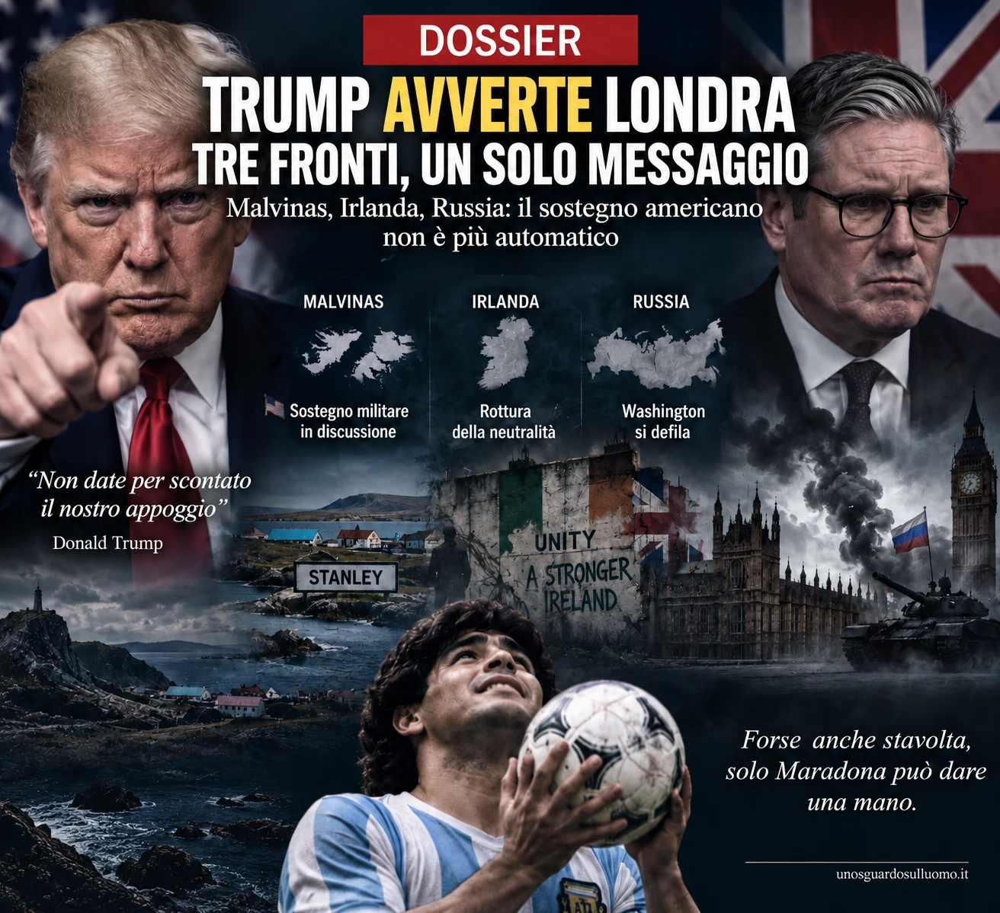

Nel 1982 Londra combatté una guerra a quasi tredicimila chilometri da casa e la vinse. Quarantaquattro anni dopo, la domanda non è più soltanto se l’Argentina rivendichi ancora le Malvinas. La domanda è se il Regno Unito possa contare ancora sulla stessa rete politica, logistica e militare che allora gli permise di sostenere quella guerra. Donald Trump ha rimesso in discussione proprio questa certezza. E lo ha fatto mentre Javier Milei riapre il dossier delle isole, mentre l’Irlanda del Nord torna improvvisamente nella bocca del presidente americano e mentre Mosca tratta Londra come un avversario diretto.
1. 1982 — La guerra che sembrava soltanto anglo-argentina
Il 2 aprile 1982 l’Argentina occupò le Falkland, chiamate Malvinas a Buenos Aires. Il regime militare guidato da Leopoldo Galtieri tentò di trasformare una rivendicazione storica, radicata nell’identità nazionale argentina, in un fatto compiuto. Il governo di Margaret Thatcher rispose inviando una forza navale nell’Atlantico meridionale.
La guerra durò settantaquattro giorni. Morirono 649 militari argentini, 255 britannici e tre civili delle isole. Il 14 giugno le forze argentine a Port Stanley si arresero e Londra riprese il controllo dell’arcipelago.
La memoria pubblica britannica ha spesso presentato quella vittoria come la prova della capacità del Regno Unito di proiettare forza autonomamente a enorme distanza. Ma i documenti americani declassificati raccontano una realtà più complessa. Gli Stati Uniti tentarono inizialmente una mediazione, perché Ronald Reagan non voleva scegliere tra uno dei principali alleati dell’Organizzazione del Trattato del Nord Atlantico (NATO) e un Paese latinoamericano importante nell’equilibrio della Guerra fredda. Quando la mediazione fallì, Washington scelse Londra.
Il sostegno non fu simbolico. Già nei primi giorni della crisi il Dipartimento di Stato discuteva le richieste britanniche per l’uso dell’isola di Ascension, il rifornimento di carburante e il transito di velivoli della Royal Air Force. Nei memorandum del Pentagono compaiono comunicazioni satellitari, intelligence, meteorologia, logistica, carburante, materiali e accesso a infrastrutture americane. Il 30 aprile 1982, dopo il fallimento della missione del segretario di Stato americano Alexander Haig, gli Stati Uniti sospesero gli aiuti all’Argentina e si schierarono apertamente con il governo Thatcher.
Il punto non è sostenere che la guerra fu combattuta dagli americani. Non lo fu. Il punto è capire che la capacità britannica di sostenere una campagna militare tanto lontana da casa era inserita dentro una rete occidentale nella quale Washington costituiva il retroterra decisivo. Nel 1982 Londra partì da sola, ma non era sola.
2. Perché le Malvinas non sono mai diventate un dossier chiuso
Per l’Argentina la sconfitta militare non ha chiuso la questione. La rivendicazione di sovranità sulle Malvinas è entrata nella Costituzione e attraversa governi di orientamento politico opposto. Per Londra, invece, il fondamento politico principale resta il diritto degli abitanti delle Falkland a scegliere il proprio status.
Nel referendum del 2013, 1.513 elettori su 1.517 votarono per mantenere lo status di territorio britannico d’oltremare. Buenos Aires non riconosce quel referendum come soluzione della disputa, perché considera gli abitanti attuali una popolazione insediata sotto amministrazione britannica e non un popolo colonizzato cui spetti decidere la sovranità.
Questa differenza giuridica e politica non è mai stata risolta. Per decenni è rimasta congelata perché nessuna delle due parti aveva interesse a trasformarla di nuovo in una crisi maggiore. Nel 2026, però, qualcosa è cambiato: alle vecchie ragioni identitarie si è aggiunto un interesse economico molto più concreto.
3. Sea Lion — Quando sotto la disputa compare il petrolio
A circa 220 chilometri a nord delle isole si trova Sea Lion, il progetto petrolifero che ha riportato le Malvinas al centro della politica argentina. Navitas Petroleum, società israeliana quotata a Tel Aviv, controlla il 65% del progetto; la britannica Rockhopper Exploration possiede il restante 35%.
Il dato di circa 1,7 miliardi di barili indicato da Rockhopper riguarda il petrolio presente nel giacimento: non coincide con la quantità effettivamente recuperabile. Per la prima fase, la decisione di investimento del dicembre 2025 indica un fabbisogno finanziario successivo alla decisione di circa 1,8 miliardi di dollari fino alla prima produzione e 2,1 miliardi fino al completamento, comprese riserve per imprevisti e costi finanziari. La prima produzione è prevista nel 2028, con un obiettivo iniziale nell’ordine di 50.000 barili al giorno. Risorse complessive, singole fasi e capacità produttiva vanno tenute distinte: è su questi numeri, e sulla possibilità di ampliarli, che si misura la posta economica.
Per Buenos Aires questo cambia la natura della disputa. Non si parla più soltanto di una bandiera issata su un arcipelago remoto: si parla della possibilità che società straniere estraggano, per decenni, risorse che l’Argentina considera proprie.
Milei ha quindi spostato la pressione sul terreno economico e giudiziario. Il suo governo ha minacciato sanzioni contro società, dirigenti, azionisti e fornitori legati allo sfruttamento degli idrocarburi nelle acque contese. L’8 settembre 2026 Buenos Aires ha presentato una denuncia penale contro Navitas e alcuni suoi dirigenti, accusandoli di operare sulla base di licenze che l’Argentina considera illegittime.
Qui c’è una differenza sostanziale rispetto al 1982: Milei non ha bisogno di mandare soldati sulle isole per alzare il costo della sovranità britannica. Può colpire finanziamenti, investitori, assicurazioni, forniture, reputazione e accesso futuro al mercato argentino. È una pressione lenta, giuridica e finanziaria, ma può essere molto più difficile da neutralizzare con una portaerei.
4. Trump — Il sostegno a Londra diventa una leva negoziale
La vera novità del 2026 non è che l’Argentina rivendichi le Malvinas. Lo ha sempre fatto. La novità è che il presidente degli Stati Uniti mette pubblicamente in discussione la prevedibilità del sostegno a Londra. Washington ha storicamente mantenuto una posizione neutrale sulle rivendicazioni di sovranità, pur riconoscendo l’amministrazione britannica di fatto. Questa posizione diplomatica va distinta dall’aiuto militare e logistico fornito nel 1982 e dalle scelte che gli Stati Uniti potrebbero compiere in una nuova crisi.
Trump ha dichiarato che Washington sta riesaminando la propria posizione sulle Falkland. La frase arriva dentro uno scontro più largo con il governo britannico sulla guerra contro l’Iran. Trump ha accusato più volte gli alleati europei di non aver ricambiato il sostegno americano quando Washington riteneva di averne bisogno.
Il passaggio politico è importante perché Trump lega apertamente l’alleanza alla reciprocità. Non considera sufficiente una storia comune, una struttura militare o una formula diplomatica. Se un alleato non si comporta, a suo giudizio, da alleato quando serve agli Stati Uniti, quel rapporto può essere rinegoziato anche su dossier che fino a ieri sembravano intoccabili.
Il 12 settembre, a Dublino, parlando delle Falkland, Trump ha messo in dubbio la capacità britannica di affrontare oggi una nuova campagna come quella del 1982 e ha detto di ritenere probabile un proprio intervento come mediatore. Il messaggio non è neutrale: il presidente americano non sta dicendo a Londra che Washington sarà al suo fianco come nel 1982. Sta dicendo che, se la crisi tornasse a esplodere, gli Stati Uniti deciderebbero come muoversi.
La nostra lettura è che per Londra si apra un problema strategico prima ancora di un cambiamento formale della politica americana. La deterrenza britannica sulle isole non dipende soltanto dal numero di soldati presenti nell’arcipelago. Dipende anche da ciò che Buenos Aires pensa accadrebbe il giorno dopo un’eventuale escalation. Se l’Argentina percepisce che Washington potrebbe non schierarsi con Londra, il calcolo politico della crisi può cambiare anche senza sparare un colpo. Non basta a rendere praticabile una guerra, ma può incoraggiare una pressione diplomatica ed economica più ambiziosa.
5. Che cosa può interessare a Trump in Argentina
Pensare che tutto nasca da una simpatia personale tra Trump e Milei sarebbe riduttivo. L’Argentina del 2026 offre agli Stati Uniti una combinazione di risorse, territorio e allineamento politico che Washington non trova facilmente altrove in America Latina.
La prima voce è l’energia. Vaca Muerta è una delle più grandi formazioni mondiali di shale oil e shale gas. Buenos Aires sta tentando di trasformarla in una piattaforma di esportazione capace di alimentare grandi progetti di gas naturale liquefatto. Uno dei progetti allo studio vale decine di miliardi di dollari.
La seconda voce sono i minerali critici. Litio e rame sono indispensabili per batterie, reti elettriche, difesa, elettronica e transizione energetica. Washington considera da anni la dipendenza dalle catene dominate dalla Cina un problema strategico. Un’Argentina stabilmente inserita nel campo americano riduce lo spazio economico e politico di Pechino in una regione nella quale la Cina ha investito enormemente.
La terza voce è geografica. L’Argentina controlla uno dei grandi accessi all’Atlantico meridionale, guarda verso l’Antartide, possiede porti e territori fondamentali per qualunque futura competizione sulle rotte del Sud. Il governo Milei ha inoltre riaperto il progetto di una base navale integrata a Ushuaia, sul Canale di Beagle. Non significa automaticamente una base americana. Significa però che il valore strategico del Paese va ben oltre il peso della sua economia.
Infine c’è la finanza. Il segretario al Tesoro Scott Bessent ha indicato apertamente l’Argentina come esempio dell’uso della potenza finanziaria americana come strumento di politica estera. Il sostegno a Milei non è quindi soltanto ideologico: è parte di una strategia per riportare il Paese dentro un’orbita statunitense più netta.
A questo punto la domanda cambia: Trump sta semplicemente concedendo qualcosa a Milei sulle Malvinas oppure sta usando una questione simbolica per consolidare un alleato che offre energia, minerali, accesso all’Atlantico meridionale e un argine alla Cina?
6. Israele — Il paradosso Navitas
La pista israeliana è una delle più interessanti perché, a prima vista, sembra contraddittoria. Milei è uno dei leader più vicini a Israele. Il suo governo ha rafforzato il rapporto politico con Benjamin Netanyahu e il 19 aprile 2026 i due governi hanno annunciato il lancio degli Accordi di Isacco, un quadro di cooperazione strategica fra Argentina, Israele e partner affini dell’emisfero occidentale. Buenos Aires ha costruito con Gerusalemme un asse molto più stretto rispetto ai precedenti governi argentini.
Eppure proprio Milei sta colpendo Navitas Petroleum, una società israeliana e il principale operatore del progetto Sea Lion.
La contraddizione diventa ancora più evidente quando Yair Netanyahu, figlio del primo ministro israeliano, scrive pubblicamente che le Falkland appartengono all’Argentina e sostiene che Israele dovrebbe stare dalla parte di Buenos Aires anche per l’amicizia del governo Milei con Israele.
Yair Netanyahu non è il governo israeliano e le sue parole non equivalgono a una decisione diplomatica di Benjamin Netanyahu. Mostrano però che una voce politicamente esposta e vicina per legame familiare al premier può sostenere la rivendicazione argentina anche mentre un’impresa israeliana opera con licenze britanniche. L’episodio non dimostra una linea concordata, ma rende visibile una possibile divergenza fra solidarietà politica e interessi societari.
Da qui nasce un’ipotesi politica: se il problema argentino è la licenza britannica e non lo sfruttamento petrolifero in sé, un futuro accordo potrebbe consentire a interessi israeliani di restare nel progetto cambiando la controparte politica. In questa lettura, Milei potrebbe contestare il titolo britannico senza voler espellere necessariamente il capitale israeliano. Non esiste una prova pubblica di garanzie già concesse a Navitas o al governo israeliano, e le dichiarazioni di Yair Netanyahu non la sostituiscono. Resta possibile anche una spiegazione meno ambiziosa: che amicizia politica e contenzioso economico procedano su binari separati. Ma proprio la loro coesistenza rende legittimo chiedersi se, dietro lo scontro sulle licenze, possa aprirsi uno spazio negoziale sugli interessi.
7. Dublino — Trump apre un secondo fronte contro Londra
Il 12 settembre 2026 Trump non si limita alle Falkland. Seduto a Dublino accanto al Taoiseach Micheál Martin, dice che gli piacerebbe vedere un’Irlanda unita, la definisce una cosa fantastica e aggiunge che, a suo giudizio, prima o poi accadrà.
La frase pesa perché l’Irlanda del Nord non è un territorio d’oltremare. Fa parte del Regno Unito. E la sua appartenenza è stata al centro di uno dei conflitti più sanguinosi dell’Europa occidentale contemporanea.
Per decenni l’Irish Republican Army combatté contro la presenza britannica e per l’unificazione dell’isola. I Troubles produssero oltre tremila morti. L’Accordo del Venerdì Santo del 1998 chiuse la fase più violenta stabilendo un principio preciso: il futuro costituzionale dell’Irlanda del Nord deve essere deciso attraverso il consenso democratico, non attraverso le armi.
Da allora i presidenti americani hanno sostenuto il processo di pace evitando di trasformare la Casa Bianca in una parte attiva sul risultato finale. Trump rompe questa cautela e lo fa a Dublino, capitale di un Paese membro dell’Unione europea, parlando di una parte di un Regno Unito che dall’Unione europea è uscito.
Il messaggio politico per Londra è difficile da ignorare. Nel giro di pochi giorni il presidente americano tocca due questioni territoriali sensibili: una a tredicimila chilometri dalla Gran Bretagna e una dentro il Regno Unito stesso.
Le origini familiari di Trump aggiungono un contrasto alla scena: sua madre era scozzese, nata sull’isola di Lewis, e il presidente possiede importanti interessi economici in Scozia. Questo non prova le sue intenzioni e non esclude simpatie personali per l’Irlanda. Il dato politicamente rilevante è un altro: scegliendo di esprimersi a favore dell’unificazione, Trump introduce una preferenza presidenziale americana in una questione che Londra vorrebbe mantenere entro il quadro del consenso previsto dagli accordi di pace.
8. Russia — Qui Londra non è un alleato scontento: è un nemico
Il terzo fronte è diverso. Per Mosca il Regno Unito non è un partner con cui discutere di confini: è uno dei Paesi occidentali più direttamente coinvolti nel sostegno militare all’Ucraina.
Londra ha fornito Storm Shadow, addestramento, intelligence e sostegno politico a Kyiv. Mosca ha progressivamente alzato il livello della propria retorica, fino ad avvertire nell’agosto 2026 che potrebbe colpire obiettivi militari britannici dentro e fuori dall’Ucraina in risposta all’uso di missili britannici contro il territorio russo.
La retorica del Cremlino individua dunque il Regno Unito come un avversario specifico, con proprie responsabilità e propri obiettivi potenziali. Non dimostra però che Mosca ritenga venute meno le garanzie dell’Alleanza atlantica. Anche la localizzazione degli eventuali obiettivi conta: un attacco sul territorio britannico e uno contro personale o mezzi britannici in Ucraina non pongono la stessa questione.
Qui occorre distinguere i piani. Le Falkland si trovano fuori dall’ambito geografico di difesa collettiva definito dagli articoli 5 e 6 del Trattato del Nord Atlantico; il territorio britannico in Europa vi rientra. Una presa di distanza americana sulle isole non equivale quindi al ritiro delle garanzie verso il Regno Unito. La questione sollevata da questo dossier riguarda la loro credibilità politica: se Trump insiste sul fatto che gli alleati devono meritarsi l’appoggio americano, Mosca può interrogarsi sulla determinazione di Washington. È un’interpretazione degli incentivi, non la prova che il Cremlino consideri Londra priva di protezione.
Non ci sono prove di un coordinamento tra Trump e Putin contro il Regno Unito. Non servono per vedere il problema: due linee indipendenti possono produrre lo stesso risultato strategico. Da una parte Mosca aumenta la pressione su Londra; dall’altra Washington rende meno scontata la copertura politica che per decenni ha accompagnato la postura britannica.
9. Tre fronti, un solo messaggio
Malvinas, Irlanda del Nord e Russia non sono lo stesso dossier. Ma insieme mostrano una Gran Bretagna costretta a difendere contemporaneamente tre idee di sé.
La prima è l’idea di essere ancora una potenza capace di proteggere un territorio remoto nell’Atlantico meridionale. La seconda è l’idea che l’integrità del Regno Unito sia una questione interna sottratta alle pressioni degli alleati. La terza è l’idea di poter sostenere una linea molto avanzata contro Mosca contando, in ultima istanza, sulla forza dell’alleanza atlantica.
Nella lettura proposta da questo dossier, Trump incrina soprattutto un presupposto comune ai tre fronti: la fiducia britannica nella continuità del sostegno americano. Gli obblighi, gli strumenti e i rischi restano diversi; il segnale politico che Londra riceve è quello di un alleato disposto a rendere più visibile il prezzo della propria solidarietà.
È qui che il rapporto speciale tra Washington e Londra cambia natura. Per decenni la special relationship è stata trattata come un capitale storico accumulato: intelligence condivisa, deterrenza nucleare, NATO, guerre combattute insieme, cooperazione diplomatica. Trump la legge in modo molto più transazionale. Il capitale storico vale finché produce reciprocità presente.
Il messaggio implicito non è difficile da ricostruire: il Regno Unito non può continuare a comportarsi come se il sostegno americano fosse una risorsa permanente e indipendente dalle scelte britanniche. Londra può continuare a perseguire la propria politica, ma il prezzo della divergenza con Washington potrebbe essere pagato proprio nei dossier nei quali ha più bisogno della potenza americana.
10. La reazione britannica — Londra non arretra
Il governo britannico ha risposto con fermezza sulle Falkland. La ministra del Foreign Office Kirsty McNeill ha dichiarato in Parlamento che non esistono dubbi sulla sovranità britannica e ha ribadito l’impegno verso i diritti democratici degli abitanti delle isole. Londra ha inoltre fatto sapere di aver comunicato chiaramente la propria posizione a Washington.
Sul fronte irlandese, Downing Street ha reagito nello stesso giorno alle parole di Trump. Il governo ha ribadito che la propria posizione non cambia e che non esistono oggi le condizioni politiche per un referendum sull’unità irlandese. Gli unionisti nordirlandesi hanno reagito ancora più duramente, ricordando che il futuro dell’Irlanda del Nord deve essere deciso dai suoi abitanti e non dal presidente degli Stati Uniti.
Sulla Russia, infine, Londra non mostra intenzione di diminuire il sostegno all’Ucraina. Dopo le minacce russe contro obiettivi britannici, il Ministero della Difesa ha confermato la linea di sostegno a Kyiv.
La risposta britannica, quindi, non è l’arretramento. È l’opposto: sovranità sulle Falkland, status dell’Irlanda del Nord regolato dall’Accordo del Venerdì Santo, sostegno all’Ucraina.
La fermezza diplomatica poggia anche su una presenza militare permanente nell’Atlantico meridionale, documentata dal Ministero della Difesa britannico, e sull’infrastruttura di Mount Pleasant. Il paragone con il 1982 non può ignorarla: difendere una posizione già presidiata è diverso dal riconquistarla dopo un’occupazione. Per stabilire se Londra potrebbe sostenere autonomamente una nuova campagna servirebbe inoltre un confronto aggiornato fra capacità britanniche e argentine, rinforzi, logistica e aiuti disponibili. Le dichiarazioni di Trump non risolvono questo confronto. Rendono però più urgente la domanda politica: quanto costa mantenere contemporaneamente queste posizioni quando il principale alleato rende meno prevedibile il proprio sostegno?
11. Il punto che resta
Nel 1982 l’Argentina scoprì che, quando la mediazione finì, Washington avrebbe scelto Londra. Nel 2026 Milei vede un presidente americano che mette in discussione quella certezza, che considera l’Argentina un alleato politico utile e che usa apertamente la reciprocità come criterio per giudicare gli alleati.
Questo non significa che domani le Falkland cambieranno bandiera. Significa qualcosa di più sottile: il rapporto di forza attorno alle isole non dipende soltanto dalle guarnigioni presenti a Stanley, ma anche da ciò che Argentina e Regno Unito credono che gli Stati Uniti farebbero nel momento decisivo.
Nel frattempo Londra deve difendere la propria posizione sulle Malvinas, contenere il ritorno della questione irlandese e sostenere una linea dura contro una Russia che la tratta sempre più come un nemico diretto.
La Gran Bretagna continua a comportarsi da grande potenza. La vera domanda è se possa ancora permettersi di farlo con la stessa sicurezza di ieri.

Forse anche stavolta, solo Maradona può dare una mano.
Fonti
- U.S. Department of State — Foreign Relations of the United States, 1981–1988, Volume XIII: Conflict in the South Atlantic, 1981–1984.
- U.S. Department of State — Office of the Historian, The South Atlantic Crisis, 1982.
- Reuters — Argentina presents criminal complaint against Navitas Petroleum over Falklands drilling, 8 settembre 2026.
- Reuters — Israeli investors in crosshairs of Argentina’s Milei over Falklands oil project, 4 settembre 2026.
- Reuters — UK minister says there is ‘no doubt’ on sovereignty over Falkland Islands, 8 settembre 2026.
- Reuters — Trump says he would ‘love’ to see a united Ireland, 12 settembre 2026.
- Reuters — UK PM’s office says position on Irish unity unchanged after Trump comments, 12 settembre 2026.
- Reuters — Russia says it could strike UK military targets in response to Kyiv’s use of British missiles, 27 agosto 2026.
- Reuters — US Treasury chief Bessent backs using US financial power as foreign policy tool, 9 settembre 2026.
- Associated Press — Trump touches a nerve while in Ireland by saying reunification would be ‘fantastic’, 12 settembre 2026.
- Buenos Aires Times / AFP — Trump says he could settle UK-Argentina dispute over Malvinas, 12 settembre 2026.
- Al Jazeera — Yair Netanyahu, Israeli PM’s son, angers UK right over Falklands comment, 3 settembre 2026.
- Al Jazeera — ‘Winds of change’: How Milei is stirring Falklands claim amid Trump-UK spat, 4 settembre 2026.
- Al Jazeera — Why do the Falkland Islands matter to the UK and Argentina so much?, 7 settembre 2026.
- Associated Press — What to know about UK-controlled Falkland Islands after Argentina’s president stakes claim, settembre 2026.
- Rockhopper Exploration — Sea Lion, scheda del progetto; Final Investment Decision on Sea Lion, dicembre 2025; Sea Lion Operator’s Update, maggio 2026.
- Organizzazione del Trattato del Nord Atlantico — Trattato del Nord Atlantico, articoli 5 e 6, 4 aprile 1949.
- Ministero degli Affari esteri argentino — Argentina e Israel lanzan los Acuerdos de Isaac para fortalecer la cooperación estratégica en defensa de la libertad y la democracia, 19 aprile 2026.
- Ministero della Difesa britannico — British forces overseas: Falkland Islands and Ascension Island, pagina istituzionale.
- U.S. Department of State — Foreign Relations of the United States, 1981–1988, Volume XIII, documento 93, nota 2: richiesta britannica di carburante ad Ascension riferita al telegramma del 9 aprile 1982.